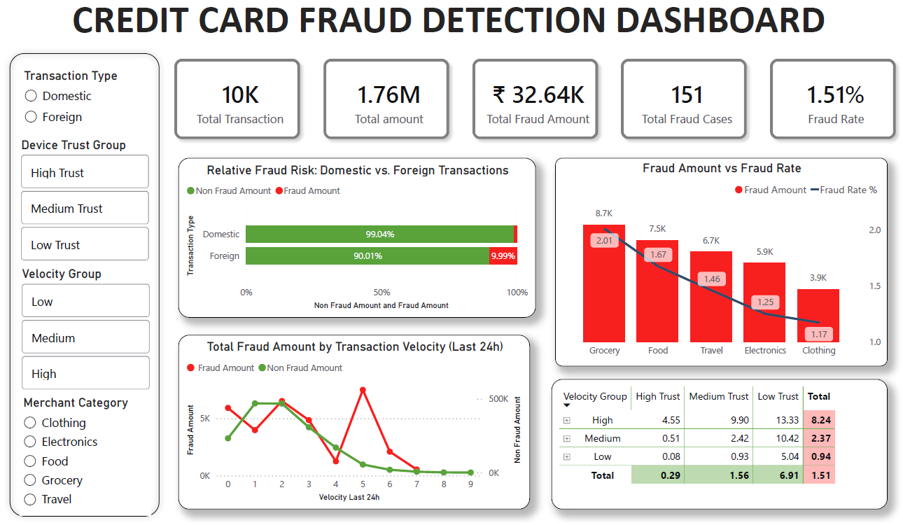

An end-to-end fraud intelligence pipeline analyzing 10,000 transactions — powered by Python, SQL, Power BI, and an LLM-generated risk summary via Ollama + Gemma.
From raw CSV to AI-powered dashboard — preprocessing, SQL analytics, Power BI visualization, and local LLM risk reporting.
Power BI dashboard covering fraud distribution, risk categories, velocity patterns, and merchant analysis.

Ollama runs a local Gemma model that reads computed fraud metrics and auto-generates a structured risk summary — no manual reporting needed.
Based on analysis of 10,000 transactions, the model identified 151 confirmed fraud cases totaling ₹32,640 in losses.
Foreign transactions exhibit a fraud rate 3.2× higher than domestic. High-velocity clusters (5+ transactions in 24h) account for 38% of all fraud despite representing only 12% of total volume.
Combining foreign flagging, velocity caps, and device trust scoring could theoretically prevent an estimated ~60% of detected fraud cases.
Six concrete findings from fraud analysis — each pointing to actionable prevention strategies.
Key queries calculating fraud rates, segmented risk groups, and surfacing patterns by merchant, origin, and velocity.
-- Overall fraud rate SELECT COUNT(*) AS total_transactions, SUM(CASE WHEN is_fraud = 1 THEN 1 ELSE 0 END) AS fraud_count, ROUND(AVG(is_fraud::numeric) * 100, 2) AS fraud_rate_pct FROM credit_card_transactions; -- Fraud rate by merchant category SELECT merchant_category, COUNT(*) AS total, SUM(is_fraud) AS fraud_count, ROUND(SUM(is_fraud)::numeric / COUNT(*) * 100, 2) AS fraud_rate, SUM(amount * is_fraud) AS fraud_amount FROM credit_card_transactions GROUP BY merchant_category ORDER BY fraud_amount DESC; -- High-velocity fraud detection WITH velocity AS ( SELECT customer_id, transaction_date, COUNT(*) OVER ( PARTITION BY customer_id ORDER BY transaction_date RANGE BETWEEN INTERVAL '1 day' PRECEDING AND CURRENT ROW ) AS txn_last_24h, is_fraud FROM credit_card_transactions ) SELECT CASE WHEN txn_last_24h >= 5 THEN 'High Velocity' WHEN txn_last_24h >= 3 THEN 'Medium Velocity' ELSE 'Normal' END AS velocity_group, ROUND(AVG(is_fraud::numeric)*100,2) AS fraud_rate_pct FROM velocity GROUP BY 1 ORDER BY fraud_rate_pct DESC;
Each recommendation is tied directly to a SQL finding — prioritized by fraud impact and implementation urgency.